Latest vs old
| Old | Latest | |
|---|---|---|
| Points | 2,048 | 4,096; up to 32,768 at sampling |
| VAE size | 55.9 M parameters | 13.5 M parameters |
| Encoder input | Garment, body, occupancy, class — body-aware through a Body-PVConv voxel branch at every layer | Garment only, first transferred to a fixed canonical body (mean of 256 training bodies). The encoder is body-free. Transfer: each point keeps its offsets to its 8 nearest body vertices, rotated with their normals, re-attached to the same vertices on the canonical body, distance-weighted. |
| Latent | Global + per-point latent h with a learned feature channel |
Global (128) + 4,096 × 3 — point positions only, no feature channel. Body shape is absent, so the same garment on different bodies encodes to nearly the same latent. |
| Body in decoder | Extra voxel branch on body points in each layer | Separate body tower on the target body (6,890 verts + normals + β10): a global body code conditions every layer, 2,048 landmarks are cross-attended, and per-level body features are added from the 8 nearest points. |
| Occupancy | Input through a separate MLP autoencoder on zo |
Per-vertex mask (covered / free / unknown) from rays along body normals. Edited directly; no autoencoder. Training: the encoder sees the garment cut by mask A, the decoder gets mask B and must output the garment cut by B — trim, grow, or both. Cuts: hem, sleeves per arm, overlap with a smaller garment. 30% of rows have no mask. The prior re-reads the mask at every step. |
| VAE loss | Chamfer + L1 + KL | Chamfer + EMD + ordered L1 + kNN edge-length preservation + KL + keep-head BCE. Some rows decoded on another body. |
| Prior | DDPM, ε-prediction, 1,000 steps; two latent DDPMs; the local prior sees the body | Rectified flow, clean-latent (x) prediction with velocity loss: x_t = (1−t)η + t z, logit-normal t, exact minibatch OT coupling per class, 64 Euler/Heun steps. Class and occupancy only — no body. 46.8 M parameters. |
| Guidance | Classifier-free, class + occupancy, cfg 2.0 | Classifier-free on class with a learned occupancy null token. Shipped runs use cfg 1.0; there is no separate occupancy-guidance path in the code. |
| Editing | Occupancy latent interpolation + DF projection | One unified latent edit: the keep head trims to the painted mask, the prior inpaints newly covered regions, and a 2×2 cm band of old points along the grow direction is released and regenerated for a clean seam. |
| Refinement | Distance-field projection module | Removed. No distance field or refinement code exists. Thin surfaces now come from the deterministic position latent, the keep head, and screened-Poisson meshing with boundary and interior smoothing. |
Benchmarks
1-NNA % (CD / EMD), lower is better
| Method | Upper | Trousers | Skirt | Dress | Jumpsuit | Dress+Jumpsuit |
|---|---|---|---|---|---|---|
| TailorDiff (ours) | 62.6 / 59.4 | 52.5 / 57.8 | 68.4 / 53.5 | 64.1 / 59.0 | 58.1 / 53.6 | 61.1 / 56.1 |
| TailorDiff grow fine-tune (ours) | 55.6 / 59.4 | 51.0 / 52.9 | 68.4 / 52.3 | 65.5 / 58.6 | 56.2 / 59.9 | 61.3 / 56.2 |
| Training data (floor) | 51.1 / 50.0 | 50.5 / 44.6 | 59.8 / 55.1 | — | — | 56.5 / 50.1 |
| SMPLicit | 85.2 / 76.7 | 89.1 / 76.7 | 94.8 / 86.4 | — | — | — |
| DrapeNet | 83.2 / 70.3 | 75.6 / 61.1 | — | — | — | — |
| DIG | 82.3 / 78.9 | 68.2 / 58.1 | — | — | — | — |
| ISP | 91.8 / 86.7 | 97.8 / 96.8 | 97.5 / 97.7 | — | — | — |
| NeuralABC | — | — | — | — | — | 63.2 / 58.4 |
Body–cloth intersection %, lower is better
| Method | Upper | Trousers | Skirt | Dress | Jumpsuit | Dress+Jumpsuit |
|---|---|---|---|---|---|---|
| TailorDiff (ours) | 0.13 ± 0.15 [0.34] | 0.10 ± 0.16 [0.59] | 0.08 ± 0.15 [0.18] | 0.13 ± 0.15 [0.32] | 0.25 ± 0.26 [0.78] | 0.17 ± 0.19 [0.47] |
| TailorDiff grow fine-tune (ours) | 0.10 ± 0.14 [0.27] | 0.10 ± 0.19 [0.56] | 0.06 ± 0.14 [0.16] | 0.14 ± 0.17 [0.33] | 0.24 ± 0.24 [0.76] | 0.17 ± 0.19 [0.47] |
| Training data (floor) | 0.00 ± 0.03 [0.01] | 0.02 ± 0.13 [0.31] | 0.10 ± 0.24 [0.13] | 0.00 ± 0.01 [0.02] | 0.00 ± 0.00 [0.16] | 0.00 ± 0.00 [0.09] |
| GT held-out | 0.00 ± 0.03 [0.01] | 0.01 ± 0.09 [0.25] | 0.06 ± 0.18 [0.08] | 0.00 ± 0.00 [0.02] | 0.00 ± 0.00 [0.11] | 0.00 ± 0.00 [0.05] |
| SMPLicit | 11.86 ± 13.06 [12.37] | 28.09 ± 12.07 [30.14] | 18.45 ± 8.50 [20.03] | — | — | — |
| DrapeNet | 0.48 ± 1.98 [0.53] | 1.12 ± 4.58 [1.34] | — | — | — | — |
| DIG | 0.00 ± 0.03 [0.01] | 0.00 ± 0.00 [0.00] | — | — | — | — |
| ISP | 0.32 ± 1.11 [0.46] | 0.18 ± 0.70 [0.82] | 0.17 ± 0.56 [0.46] | — | — | — |
| NeuralABC | — | — | — | — | — | 1.41 ± 5.40 [2.43] |
Reconstruction (CD / P2S, cm), lower is better
| Method | Upper | Trousers | Skirt |
|---|---|---|---|
| DrapeNet [10] | 1.522 / 0.631† | 1.585 / 0.739† | – / – |
| ISP [26] | 2.213 / 1.032 | 2.333 / 1.214 | 6.468 / 2.925 |
| WordRobe [52] | 1.491 / 0.635† | 1.568 / 0.703† | – / – |
| Ours | 0.457 / 0.145 | 0.449 / 0.140 | 0.627 / 0.187 |
Diverse samples
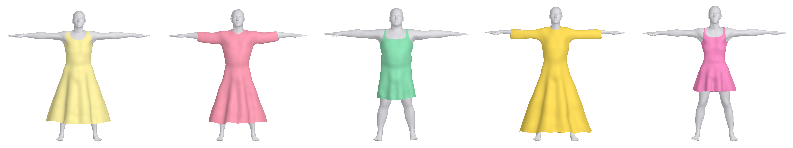
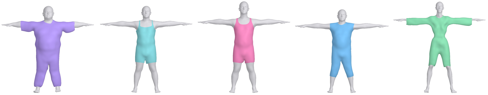
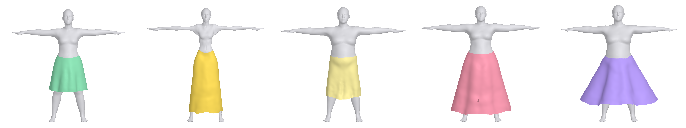
Interpolation between two garments
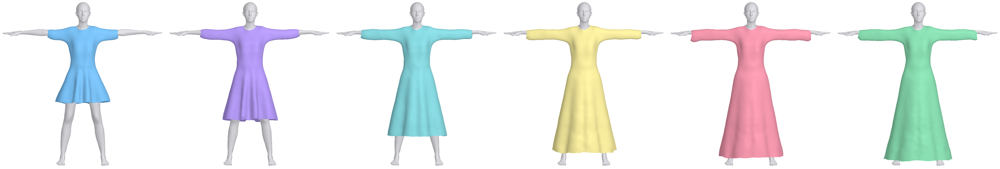
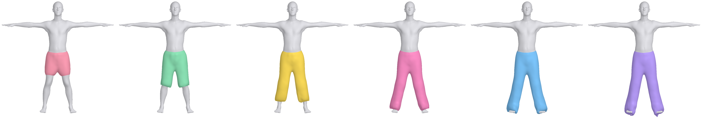
Body transfer
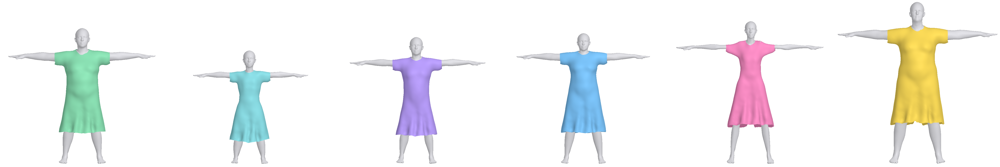
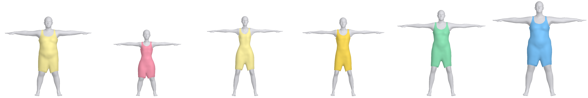
Fine coverage editing
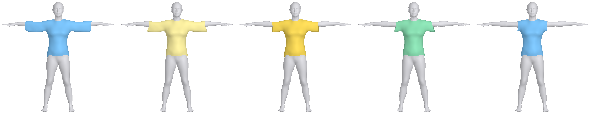
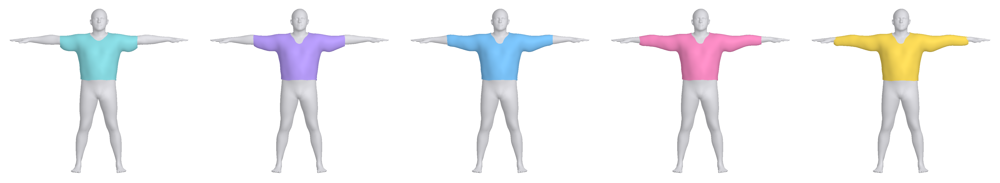
Correspondence
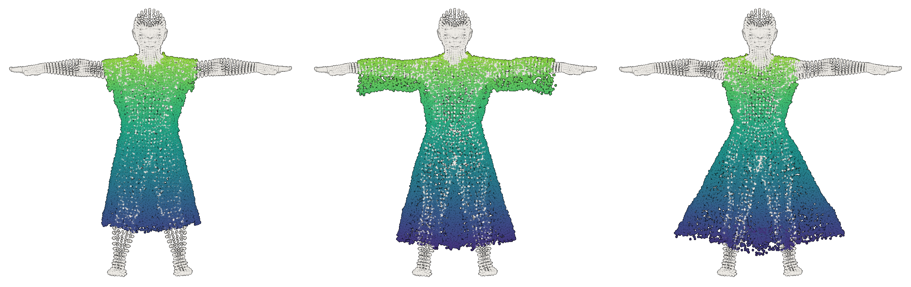
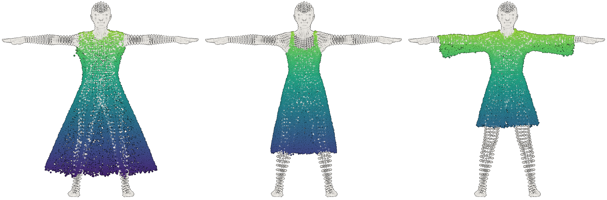